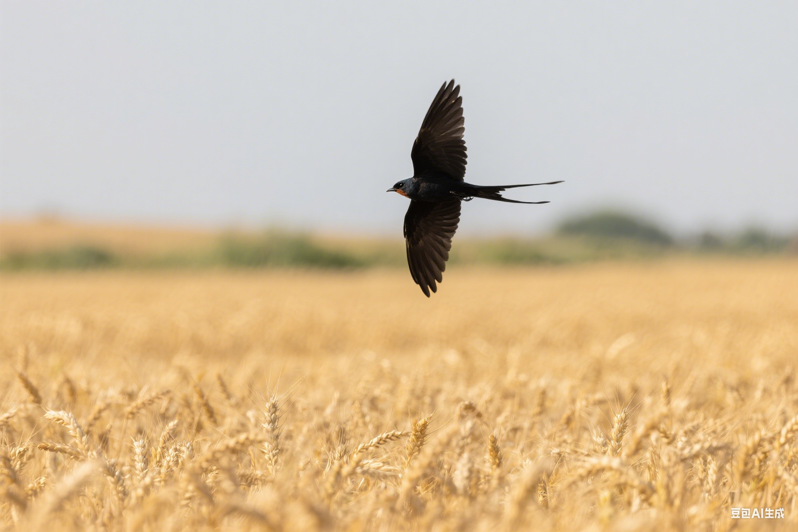

"老年鸟类需要更多的关爱和专业护理。它们的每一天都珍贵，值得我们用心呵护。"
— 老年动物护理专家👴 认识老年鸟类
不同种类的鸟类寿命差异很大，了解您的鸟类何时进入老年期是提供适当护理的第一步：
🐦 小型鸟类 (5-15年)
- 金丝雀：8-12年
- 虎皮鹦鹉：5-10年
- 文鸟：7-9年
- 老年期：生命后1/3阶段
🦜 中型鸟类 (15-30年)
- 玄凤鹦鹉：15-25年
- 牡丹鹦鹉：10-15年
- 太阳锥尾鹦鹉：20-30年
- 老年期：12岁以后
🦅 大型鸟类 (30-80年)
- 非洲灰鹦鹉：40-60年
- 金刚鹦鹉：50-80年
- 凤头鹦鹉：60-100年
- 老年期：生命后1/4阶段
🔍 老年期征象识别
及早识别老年期征象有助于及时调整护理方案：
👁️ 外观变化
- 羽毛光泽度下降
- 羽毛生长缓慢或不规则
- 眼睛浑浊或视力下降
- 喙和爪子过度生长
- 体重变化（增加或减少）
🏃♂️ 行为变化
- 活动量明显减少
- 睡眠时间增加
- 反应速度变慢
- 食欲变化
- 社交行为减少
🩺 健康变化
- 免疫力下降
- 消化功能减弱
- 关节僵硬或疼痛
- 呼吸变化
- 体温调节能力下降
🍽️ 老年鸟类营养管理
随着年龄增长，鸟类的营养需求会发生变化：
🥗 饮食调整原则
- 提高食物的消化性
- 增加抗氧化剂摄入
- 适量减少脂肪含量
- 补充关节保健营养素
- 确保充足的水分摄入
🌟 推荐食物
- 软化的种子和坚果
- 蒸煮的蔬菜
- 富含维生素A的食物
- Omega-3脂肪酸丰富的食物
- 易消化的蛋白质来源
⚠️ 避免食物
- 过硬难消化的食物
- 高盐高糖食品
- 刺激性食物
- 过冷或过热的食物
- 可能引起过敏的新食物
🏠 环境适应性改造
为老年鸟类创造更舒适、安全的生活环境：
🪜 栖息环境
- 降低栖木高度，减少跌落风险
- 增加栖木数量，缩短跳跃距离
- 使用较粗的栖木，便于抓握
- 在栖木周围铺设软垫
🍽️ 进食区域
- 将食盆和水盆放在易到达的位置
- 使用较浅的食盆
- 增加食盆数量
- 确保食物和水源充足
🌡️ 温度控制
- 保持稳定的温度（22-26°C）
- 避免温度骤变
- 提供额外的保温设备
- 确保良好的通风
💡 光照管理
- 提供充足但不刺眼的光照
- 使用全光谱灯具
- 保持规律的光照周期
- 避免强烈的直射光
💊 健康监测与医疗护理
老年鸟类需要更频繁和细致的健康监测：
📅 检查频率
- 每日：基本健康观察
- 每周：体重测量
- 每月：详细健康评估
- 每季度：兽医检查
- 每年：全面健康体检
🔍 重点监测项目
- 食欲和饮水量变化
- 排泄物的颜色和质地
- 呼吸频率和质量
- 活动水平和行为变化
- 羽毛和皮肤状况
🏥 常见老年疾病
了解老年鸟类常见疾病有助于早期发现和治疗：
🦴 关节炎
症状：行动缓慢、不愿移动、栖息姿势异常
护理：提供软垫、温暖环境、适度运动
治疗：兽医可能开具抗炎药物
👁️ 白内障
症状：眼睛浑浊、视力下降、撞击障碍物
护理：保持环境布局稳定、增加照明
治疗：严重情况可考虑手术
💔 心脏病
症状：呼吸困难、疲劳、活动不耐受
护理：减少压力、控制体重、限制剧烈活动
治疗：需要专业兽医诊断和药物治疗
🧠 认知功能下降
症状：迷失方向、行为异常、记忆力下降
护理：保持规律作息、提供认知刺激
治疗：营养补充、环境丰富化
🎯 适龄活动调整
根据老年鸟类的身体状况调整活动内容：
🚶♂️ 低强度运动
- 短距离的栖木间移动
- 温和的攀爬活动
- 在安全区域的短时间自由活动
- 水中轻柔的洗浴
🧠 认知刺激
- 简单的觅食游戏
- 熟悉的音乐和声音
- 温和的社交互动
- 视觉刺激（观看窗外）
😌 舒适活动
- 安静的陪伴时光
- 轻柔的按摩（如果鸟儿接受）
- 温暖的日光浴
- 熟悉环境中的休息
💝 情感支持与陪伴
老年鸟类更需要情感上的关怀和陪伴：
🤗 日常陪伴
- 增加与鸟类相处的时间
- 保持温和的语调和动作
- 尊重鸟类的情绪变化
- 提供安全感和稳定性
🏠 环境稳定
- 避免频繁改变环境布局
- 保持规律的日常作息
- 减少噪音和干扰
- 维持熟悉的社交圈
⏰ 生命末期护理
当鸟类进入生命末期时，我们的重点应该转向舒适护理：
🕊️ 舒适措施
- 保持温暖舒适的环境
- 提供易消化的食物
- 减少不必要的干扰
- 给予更多的关爱和陪伴
📊 生活质量评估
- 是否还能享受食物
- 是否对环境有反应
- 疼痛是否得到控制
- 是否还有基本的生活乐趣
💔 艰难的决定
当鸟类的生活质量严重下降，痛苦无法缓解时，可能需要考虑人道的安乐死。这是一个非常困难的决定，建议：
- 与经验丰富的兽医充分讨论
- 考虑鸟类的整体福利
- 寻求家人和朋友的支持
- 给自己时间处理情感
📋 老年护理检查清单
📅 每日检查
📅 每周检查
📅 每月检查
💡 老年护理小贴士
- 耐心是最重要的品质
- 每只鸟的老化过程都不同
- 预防胜于治疗
- 保持与兽医的定期联系
- 记录详细的健康日志
- 珍惜与老年鸟类的每一刻